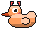
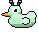

A little duck counting the days until your thing.
Email is the best way to reach me — bug reports, duck requests, or anything that isn't behaving. If you're reporting a problem, your iPhone model and iOS version help a lot.
You can also open an issue on GitHub if you'd rather it were public.
Open Duck Days once and set your date, then long-press an empty part of your home screen, tap the + in the corner, search for Duck Days, and pick a size. Small, medium and large all work, and there are lock screen ones too.
The widget reads whatever the app last saved, so open the app once — your countdown and duck should appear within a few seconds. If it's still stuck, remove the widget and add it again.
It moves, just not as smoothly. Home screen widgets can't run an animation of their own — iOS draws them one frame at a time, on its own schedule, and slows that down to save battery. Duck Days asks for a new frame every few seconds, which is the most it's allowed to ask for. Inside the app there's no such limit, so the duck there bobs and blinks properly.
Yes. Tap the countdown in the app, then turn off Widget motion. The duck inside the app keeps bobbing either way — the setting is only about the home screen.
Yes. Pick a date in the past and the countdown turns around: "219 Days / since I quit" instead of counting down.
Yes. Tap + in the app and swipe between them. Each one gets its own duck, and each widget can be pointed at a different countdown — long-press a widget on your home screen, tap Edit Widget, and choose.
No. There are no accounts, no analytics, and no networking code at all — the app genuinely cannot phone home. Your countdown is stored on your iPhone and nowhere else. The privacy policy spells it out.
An iPhone on iOS 17 or later. Duck Days is iPhone-only — there's no iPad layout.


Six of them. The other seventeen are in the app.